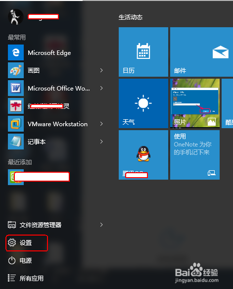
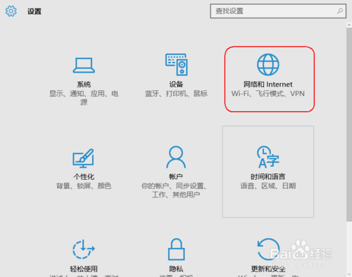
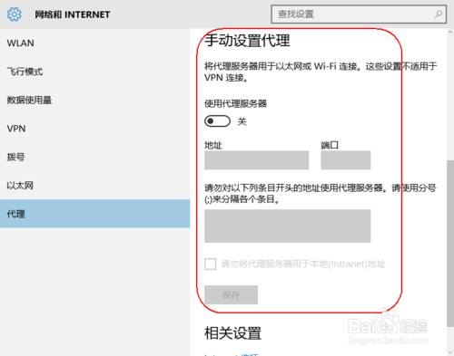
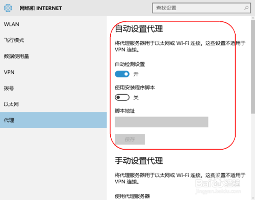
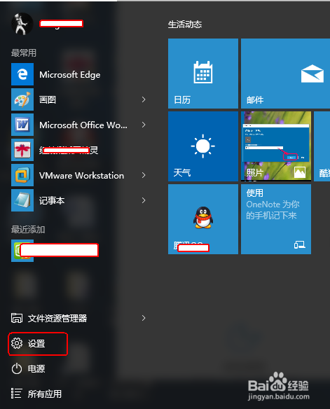
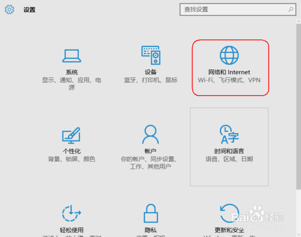
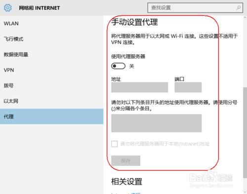
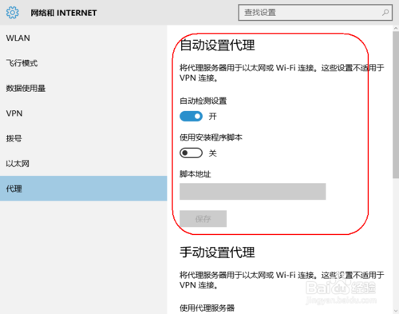

Windows系统
方法一：推荐使用Proxifier软件
方法二：手动设置
首先，按下键盘的win键，就是windows 图标。然后再开始菜单中单击“设置”。

然后，再出现的设置面板中，单击“网络和Internet”。

单击“代理”。你就会看到右侧有关代理的详细设置。

选择手动代理，设置代理服务器地址192.168.43.1及端口8787。

单击，“Internet选项”，弹出的窗口就可以设置更详细的设置了。
首先，按下键盘的win键，就是windows 图标。然后再开始菜单中单击“设置”。

然后，再出现的设置面板中，单击“网络和Internet”。

单击“代理”。你就会看到右侧有关代理的详细设置。

选择手动代理，设置代理服务器地址192.168.43.1及端口8787。

单击，“Internet选项”，弹出的窗口就可以设置更详细的设置了。